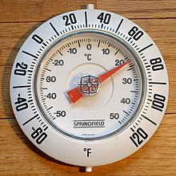

Gaya
Gaya dalam ilmu fisika adalah interaksi apa pun yang dapat menyebabkan sebuah benda bermassa mengalami perubahan gerak, baik dalam bentuk arah, maupun konstruksi geometris.[1] Dengan kata lain, sebuah gaya dapat menyebabkan sebuah objek dengan massa tertentu mengalami perubahan kecepatan. Perubahan kecepatan dapat terjadi dari kondisi benda diam menjadi bergerak, kondisi benda yang mengalami pertambahan kecepatan (berakselerasi), maupun mengalami perlambatan kecepatan.
Farad
Farad (symbol: F) merupakan satuan turunan SI untuk kapasitansi listrik, yaitu kemampuan suatu benda untuk menyimpan muatan listrik. Dinamakan menurut fisikawan Inggris, Michael Faraday.
Fahrenheit
Skala Fahrenheit adalah salah satu skala suhu selain Celsius dan Kelvin. Nama Fahrenheit diambil dari ilmuwan Jerman yang bernama Gabriel Fahrenheit (1686-1736). Skala ini dikemukakan pada tahun 1724. Dalam skala ini, titik beku air adalah 32 derajat Fahrenheit (ditulis 32 °F) dan titik didih air adalah 212 derajat Fahrenheit. Negatif 40 derajat Fahreheit sama dengan negatif 40 derajat Celsius. Skala Fahrenheit banyak digunakan di Amerika Serikat.
